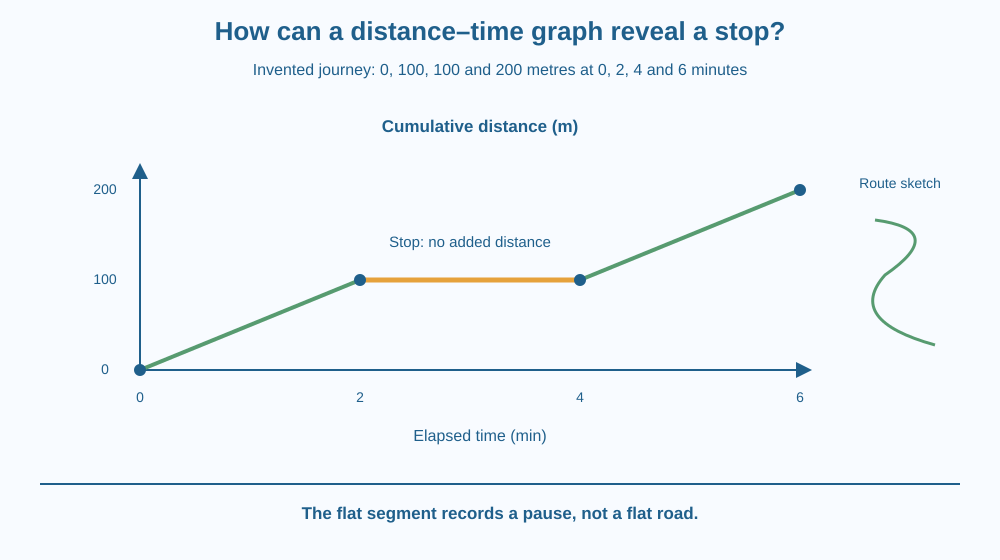

Read a simple distance–time graph for travel along a route. Explain why a horizontal segment represents no additional distance during an interval. Use axes, units and slopes carefully, and distinguish a distance travelled graph from a map of the route.
A line on a graph rises, becomes flat, then rises again. A student says the flat part means the traveller moved along a flat road. Another says it means time stopped. Both have mistaken the meaning of the axes.
The graph is not a drawing of the landscape. One axis records elapsed time, and the other records total distance travelled. Once those meanings are fixed, the flat part becomes a useful clue about what the traveller did during that interval.
A graph connects pairs of measurements. On this distance–time graph, the horizontal axis represents elapsed time and the vertical axis represents cumulative distance travelled along the route. Every plotted point links a time with the distance accumulated by then.
Imagine an invented walk: at zero minutes the total distance is zero metres; at two minutes it is 100 metres; at four minutes it is still 100 metres; at six minutes it is 200 metres. The numbers are a teaching example rather than measured information about a real person.
Between two and four minutes, time increases but cumulative distance does not. On this graph, that interval is horizontal. It represents a stop, or at least no additional measured distance within the resolution of the data.
The steepness of a rising segment connects distance change with time change. In this example, 100 metres added during two minutes gives an average speed of 50 metres per minute. This is a slope calculation, not the area calculation used with a speed–time graph.
A steeper segment on the same axes means more distance accumulated per unit time. But graphs with different scales cannot be compared by visual steepness alone. A line drawn at a large angle on one page may represent the same numerical speed as a shallower line on another scale.
A straight rising segment represents constant speed in the simplified model between plotted points. Real motion may vary within a measurement interval. Joining sparse points with a straight line is an assumption, not proof that every instant had identical speed.
Because the vertical axis here is cumulative distance travelled, it does not decrease when a traveller turns around. Returning along a route adds more distance. A position-from-start graph is a different kind of graph and can decrease as someone returns. Always read the axis label before interpreting a line.
A vertical segment would suggest distance changing while no time passes. That is not a realistic description of an ordinary walk. If such a segment appears, inspect the data, plotting method or axis interpretation rather than accepting instantaneous travel.
Use a notebook table beside the graph. Read each row as “At this elapsed time, the distance counter showed this total.” Imagine an odometer rather than a bird's-eye view of the path.
Move a finger to the right along the flat segment. Time is passing, but the distance-counter reading stays unchanged. Then move along a rising segment and describe both quantities changing together.
Finally draw the actual route as a separate map. It could be curved or level while the distance graph remains a straight rising line. Keeping the map separate prevents the shape of the graph from being mistaken for hills, bends or road height.
The SVG plots the invented points at zero, two, four and six minutes against zero, 100, 100 and 200 metres. Axes carry explicit units and the vertical label states cumulative distance.
The horizontal interval is highlighted as a stop. Rising intervals are shown with different colour emphasis so their changes can be followed. A separate small route sketch reinforces that the graph is not the physical shape of the road.
The plotted values are instructional examples. They do not establish a typical walking speed, and straight connecting segments should be read as a simplified model between observations.

A school walk may include a pause at a gate. A graph of total distance can record that pause even if the route looks unchanged on a map. Travel logs therefore describe timing information that a route map alone does not contain.
Transport tracking applications may display position, speed or distance using different graph types. The same-looking flat line can mean different things depending on which quantity is plotted. Reading a title and axis label is part of using the information responsibly.
A train waiting at a platform adds elapsed time without adding distance. A cumulative-distance graph shows a horizontal segment during the wait, regardless of whether the platform itself is level or sloping.
Use squared paper, a ruler and a pencil. No outdoor movement or phone tracking is needed.
Explain why the horizontal segment lasts two minutes even though its vertical change is zero. Your drawing is an interpretation of example data, not a measurement of an actual walk. Do not add extra decimal places or claim details between the observations that the table does not provide.
Suppose the traveller walks back toward the starting point after the final observation. What happens to cumulative distance? What might happen instead on a graph of position along a straight route measured from the start?
Use different axis labels for the two drawings. This comparison shows why a correct explanation cannot be built from line shape alone; the represented quantity must come first.
What does a horizontal interval show on a cumulative distance–time graph?
Answer: C — Elapsed time increases while the cumulative distance remains unchanged.
Why is a distance–time graph not a route map?
Answer: A — The graph relates elapsed time to distance rather than drawing the physical route.
A traveller turns back. What happens to cumulative distance while moving?
Answer: B — Travel in either direction adds to the total length of the path travelled.
Invent a four-stage journey containing steady travel, a stop and a later faster segment. Give a table with units and draw a matching cumulative-distance graph.
Ask a friend to identify the stop without showing the story first. Then show a separate route map and explain why its bends or slopes need not resemble the graph. State that straight segments are your chosen simplified model of the intervals.
A flat line can show an important event rather than missing information. On this graph it records time passing while distance stays unchanged. The absence of vertical change becomes meaningful only because the axes establish what should change during movement.
On a cumulative distance–time graph, a horizontal interval shows time passing without additional distance; the graph's shape is not the road's shape.